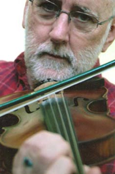

Traditional Appalachian Music and Stories

If You Want Any More, You’ve Got to Sing It Yourself!
“Imagine yourself in the past - say, one hundred years ago - on the porch of a mountainside cabin after the day’s work is complete. This twilight time of day is typically when songsters and storytellers weave their magic. My imaginary setting is informal. The children gather around as songs and stories familiar to my ancestors are revisited. There is no TV or radio or even electricity to run either one. In this picture from the past, books are not plentiful, so history, both truth and fiction, is passed from generation to generation through the vehicle of songs and stories. Singing and storytelling are integral to the mountain life my forebears experienced, so I incorporate many songs and stories into my programs. Besides demonstrating the self-sufficiency and independent character of the Appalachian resident, the program illustrates several Appalachian instruments, e.g., banjo, fiddle, guitar, and lap dulcimer. I show that sound is produced from vibrations of my strings and how the instruments function. Because process is important to children, I am able to use props such as a groundhog skin on a stretcher frame to illustrate how my ancestors manufactured everyday items from the resources around them. Moving by story and song through my family history, we all learn about making do with what we have and gain some valuable lessons in self-sufficiency.”
Using story and song, the artist shares memories of his family’s Eastern Kentucky farm life. Children learn the trials and joys of Appalachian living over the past two hundred years. Focus is on the positive contributions of Appalachian culture as transferred through the artist’s traditional music and storytelling. Appalachian survival depends on learning to use what is at hand and instills creativity and resourcefulness in its citizenry, along with a firm emphasis on family values. Children learn to celebrate their own creativity through singing and rhythm exercises with the performer. Featured instruments are the banjo, fiddle, lap dulcimer, guitar, and various homemade/recycled instruments. Storytelling includes traditional Jack tales, tall tales, and personal anecdotes.